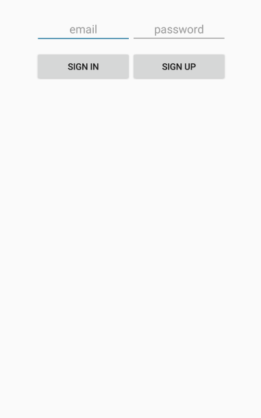
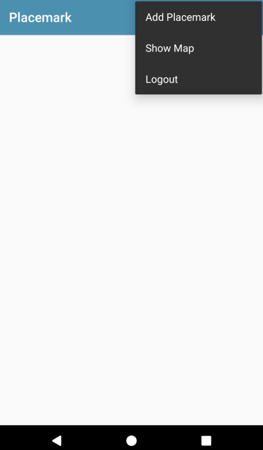
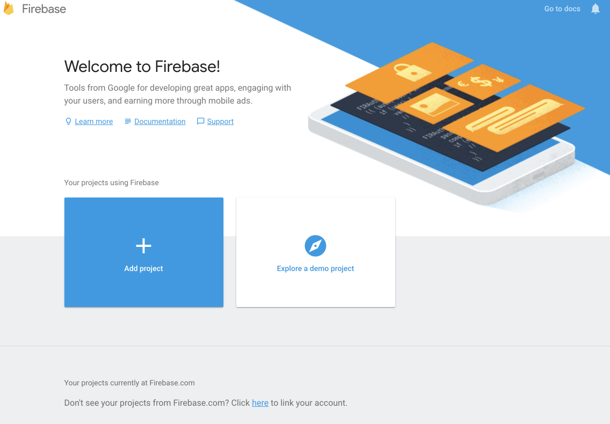
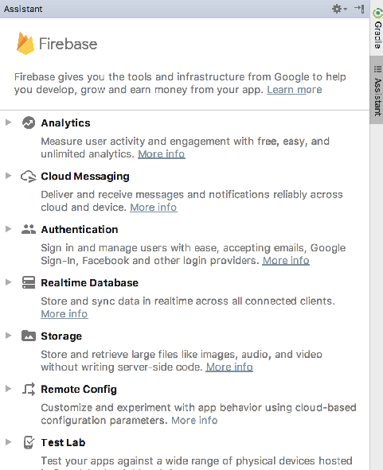
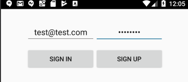
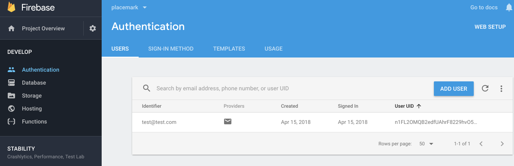
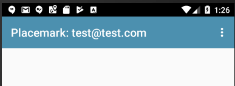

Objectives
Exercise Solutions
Exercise 1:
Although the locations is being tracked, the map view is not displaying the location correctly (it still renders the default location). See if you can fix this.
Solution
PlacemarkActivity
Minor revision to the location callback:
var locationCallback = object : LocationCallback() {
override fun onLocationResult(locationResult: LocationResult?) {
if (locationResult != null && locationResult.locations != null) {
val l = locationResult.locations.last()
info ("Location Update ${l.latitude} ${l.longitude}")
lat.setText(l.latitude.toString())
lng.setText(l.longitude.toString())
placemark.lat = l.latitude
placemark.lng = l.longitude
configureMap()
}
}Exercise 2:
Change the behaviour of the PlacemarkActivity view when an existing placemark is edited. In this mode, the application should display the latitude/longitude - but not track the location.
Solution
Display the placemarks lat/lng when the activity is opened:
PlacemarkActivity
if (intent.hasExtra("placemark_edit")) {
edit = true
placemark = intent.extras.getParcelable<PlacemarkModel>("placemark_edit")
placemarkTitle.setText(placemark.title)
description.setText(placemark.description)
lat.setText(placemark.lat.toString())
lng.setText(placemark.lng.toString())
placemarkImage.setImageBitmap(readImageFromPath(this, placemark.image))
if (placemark.image != null) {
chooseImage.setText(R.string.change_placemark_image)
}
} else {
placemark.lat = defaultLocation.lat
placemark.lng = defaultLocation.lng
placemark.zoom = defaultLocation.zoom
}In onResume, we only track location if not in edit more:
override fun onResume() {
super.onResume()
mapView.onResume()
if (!edit) {
startLocationUpdates()
}
}Exercise 3:
Augment the full screen map view with zoom controls.
MapsActivity
Just one extra line in onMapReady:
override fun onMapReady(googleMap: GoogleMap) {
map = googleMap
map.setOnMarkerDragListener(this)
map.setOnMarkerClickListener(this)
val loc = LatLng(location.lat, location.lng)
val options = MarkerOptions()
.title("Placemark")
.snippet("GPS : " + loc.toString())
.draggable(true)
.position(loc)
map.addMarker(options)
map.uiSettings.setZoomControlsEnabled(true)
map.moveCamera(CameraUpdateFactory.newLatLngZoom(loc, location.zoom))
}Login Layout
We would like to introduce a new Login screen - which will be presented before any user logs in:

Our first version will just let the user signup/login without paying any attention to what the enter as credentials.
Here is a set of new strings for the layout:
res/values/strings.xml
<string name="sign_up">Sign Up</string>
<string name="sign_in">Sign In</string>
<string name="hint_password">password</string>
<string name="hint_email">email</string>This is the login layout:
res/layout/activity_login.xml
<?xml version="1.0" encoding="utf-8"?>
<RelativeLayout xmlns:android="http://schemas.android.com/apk/res/android"
xmlns:tools="http://schemas.android.com/tools"
android:layout_width="match_parent"
android:layout_height="match_parent"
tools:context="org.wit.placemark.activities.LoginActivity">
<LinearLayout
android:id="@+id/layout_email_password"
android:layout_width="wrap_content"
android:layout_height="wrap_content"
android:layout_alignParentTop="true"
android:layout_centerHorizontal="true"
android:layout_marginTop="28dp"
android:orientation="horizontal">
<EditText
android:id="@+id/field_email"
android:layout_width="150dp"
android:layout_height="wrap_content"
android:ellipsize="end"
android:gravity="center_horizontal"
android:hint="@string/hint_email"
android:inputType="textEmailAddress"
android:maxLines="1" />
<EditText
android:id="@+id/field_password"
android:layout_width="150dp"
android:layout_height="wrap_content"
android:ellipsize="end"
android:gravity="center_horizontal"
android:hint="@string/hint_password"
android:inputType="textPassword"
android:maxLines="1" />
</LinearLayout>
<LinearLayout
android:id="@+id/layout_buttons"
android:layout_width="wrap_content"
android:layout_height="wrap_content"
android:layout_alignParentTop="true"
android:layout_centerHorizontal="true"
android:layout_marginTop="85dp"
android:orientation="horizontal">
<Button
android:id="@+id/signInBtn"
android:layout_width="150dp"
android:layout_height="wrap_content"
android:text="@string/sign_in" />
<Button
android:id="@+id/signUpBtn"
android:layout_width="150dp"
android:layout_height="wrap_content"
android:text="@string/sign_up" />
</LinearLayout>
</RelativeLayout>Login Activity
This is the activity class - which we can put alongside the other activities:
LoginActivity
package org.wit.placemark.activities
import android.os.Bundle
import android.support.v7.app.AppCompatActivity
import kotlinx.android.synthetic.main.activity_login.*
import org.jetbrains.anko.AnkoLogger
import org.jetbrains.anko.intentFor
import org.wit.placemark.R
class LoginActivity : AppCompatActivity(), AnkoLogger {
override fun onCreate(savedInstanceState: Bundle?) {
super.onCreate(savedInstanceState)
setContentView(R.layout.activity_login)
signUpBtn.setOnClickListener {
startActivity(intentFor<PlacemarkListActivity>())
}
signInBtn.setOnClickListener {
startActivity(intentFor<PlacemarkListActivity>())
}
}
}In the above, note that we just start the PlacemarkListActivity, regardless of which button is pressed - or what is entered.
The manifest needs to be altered to now nominate this activity as the launch activity:
<?xml version="1.0" encoding="utf-8"?>
<manifest xmlns:android="http://schemas.android.com/apk/res/android"
package="org.wit.placemark">
<uses-permission android:name="android.permission.ACCESS_FINE_LOCATION" />
<application
android:name=".main.MainApp"
android:allowBackup="true"
android:icon="@mipmap/ic_launcher"
android:label="@string/app_name"
android:roundIcon="@mipmap/ic_launcher_round"
android:supportsRtl="true"
android:theme="@style/AppTheme">
<activity android:name=".activities.LoginActivity">
<intent-filter>
<action android:name="android.intent.action.MAIN" />
<category android:name="android.intent.category.LAUNCHER" />
</intent-filter>
</activity>
<activity android:name=".activities.PlacemarkActivity"></activity>
<activity android:name=".activities.PlacemarkListActivity">
</activity>
<meta-data
android:name="com.google.android.geo.API_KEY"
android:value="@string/google_maps_key" />
<activity
android:name=".activities.MapsActivity"
android:label="@string/title_activity_maps">
<meta-data
android:name="android.support.PARENT_ACTIVITY"
android:value="org.wit.placemark.activities.PlacemarkActivity" />
</activity>
<activity
android:name=".activities.PlacemarkMapsActivity"
android:label="@string/title_activity_placemark_maps"
android:theme="@style/AppTheme"></activity>
</application>
</manifest>Run the app now - it should display the login activity first, and take you to the placemark list when you press either button.
Logout
As we now support log in - we also need to support logout. This will require a change to our existing menus in PlacemarkActivity
First, some new/revised strings:
res/values/strings.xml
<string name="menu_addPlacemark">Add Placemark</string>
<string name="menu_showMap">Show Map</string>
<string name="menu_logout">Logout</string>The main menu must now be restructured as follows:
res/menu/main_menu.xml
<?xml version="1.0" encoding="utf-8"?>
<menu xmlns:android="http://schemas.android.com/apk/res/android"
xmlns:app="http://schemas.android.com/apk/res-auto">
<item
android:id="@+id/item_add"
android:icon="@android:drawable/ic_menu_add"
android:title="@string/menu_addPlacemark"
app:showAsAction="never"/>
<item
android:id="@+id/item_map"
android:icon="@android:drawable/ic_menu_mapmode"
android:title="@string/menu_showMap"
app:showAsAction="never"/>
<item
android:id="@+id/item_logout"
android:title="@string/menu_logout"
android:visible="true"
app:showAsAction="never" />
</menu>Finally - we need to be able to handle the new logout menu option. This is an extend version of the menu handler in PlacemarkListActivity
override fun onOptionsItemSelected(item: MenuItem?): Boolean {
when (item?.itemId) {
R.id.item_add -> startActivityForResult<PlacemarkActivity>(200)
R.id.item_map -> startActivity<PlacemarkMapsActivity>()
R.id.item_logout -> startActivity<LoginActivity>()
}
return super.onOptionsItemSelected(item)
}Notice we are just switching to the login screen when logout is selected.
The menu now appears as a drop down, instead of a list of icons:

Try this now, and make sure it logs out as expected
Firebase
Visit Firebase and create / log in to your account:
Create a new Firebase Project:

Give the project a name:

Once the app is created - you should see the application console:

Select the Authentication panel -

In the next screen - and enable Email/Password:

Your Authentication methods should look like this:

Connect the App
Back in Android Studio, select Tools->Firebase - you should see the Firebase Assistant:

Select Authentication:

... and then select Email and password authentication:

Now press Connect to Firebase
This may require you to authenticate to firebase with your account. Once connected, you should see your firebase created app:

Select the app and press Connect to Firebase
This will insert a new file into your project called google-services.json. This file is embedded in the app folder. You will need to switch to the Project perspective in Studio in order to see it.
The assistant will also insert additional entries into your gradle files. As we are managing our gradle a little differently - we will take control of this ourselves.
This is a revised version of the base gradle file:
project gradle
buildscript {
ext.kotlin_version = '1.2.31'
ext.gradle_version = '3.1.0'
ext.google_services_version = '3.1.1'
ext.app_compat_version = '26.1.0'
ext.design_library_version = '26.1.0'
ext.support_library_version = '26.1.0'
ext.cardview_library_version = '26.1.0'
ext.constraint_layout_version = '1.0.2'
ext.anko_version = '0.10.4'
ext.anko_commons_version = '0.10.4'
ext.play_services_maps_version = '12.0.1'
ext.play_services_location_version = '12.0.1'
ext.firebase_version = '12.0.1'
ext.room_version = '1.0.0'
repositories {
google()
jcenter()
}
dependencies {
classpath 'com.android.tools.build:gradle:3.1.1'
classpath "org.jetbrains.kotlin:kotlin-gradle-plugin:$kotlin_version"
classpath "com.google.gms:google-services:$google_services_version"
}
}
allprojects {
repositories {
google()
jcenter()
}
}
task clean(type: Delete) {
delete rootProject.buildDir
}The changes here are a new classpath entry - and also new version firebase:
ext.firebase_version = '12.0.1'This is the revised module grade:
module gradle:
apply plugin: 'com.android.application'
apply plugin: 'kotlin-android'
apply plugin: 'kotlin-android-extensions'
apply plugin: "kotlin-kapt"
android {
compileSdkVersion 26
defaultConfig {
applicationId "org.wit.placemark"
minSdkVersion 23
targetSdkVersion 26
versionCode 1
versionName "1.0"
testInstrumentationRunner "android.support.test.runner.AndroidJUnitRunner"
}
buildTypes {
release {
minifyEnabled false
proguardFiles getDefaultProguardFile('proguard-android.txt'), 'proguard-rules.pro'
}
}
}
androidExtensions {
experimental = true
}
dependencies {
implementation fileTree(dir: 'libs', include: ['*.jar'])
implementation "org.jetbrains.kotlin:kotlin-stdlib-jre7:$kotlin_version"
implementation "com.android.support:appcompat-v7:$app_compat_version"
implementation "com.android.support.constraint:constraint-layout:$constraint_layout_version"
implementation "com.android.support:design:$design_library_version"
implementation "com.android.support:cardview-v7:$cardview_library_version"
implementation "org.jetbrains.anko:anko:$anko_version"
implementation "org.jetbrains.anko:anko-commons:$anko_commons_version"
implementation "com.google.android.gms:play-services-maps:$play_services_maps_version"
implementation "com.google.android.gms:play-services-location:$play_services_location_version"
implementation "android.arch.persistence.room:runtime:$room_version"
implementation "com.google.firebase:firebase-auth:$firebase_version"
implementation "com.google.firebase:firebase-database:$firebase_version"
annotationProcessor "android.arch.persistence.room:compiler:$room_version"
kapt "android.arch.persistence.room:compiler:$room_version"
testImplementation 'junit:junit:4.12'
androidTestImplementation 'com.android.support.test:runner:1.0.1'
androidTestImplementation 'com.android.support.test.espresso:espresso-core:3.0.1'
}
apply plugin: 'com.google.gms.google-services'This include some additional firebase libraries:
implementation "com.google.firebase:firebase-auth:$firebase_version"
implementation "com.google.firebase:firebase-database:$firebase_version"And also a new plugin:
apply plugin: 'com.google.gms.google-services'Rebuild the application now to make sure all of these libraries can be incorporated correctly.
Signup
Back in the LoginActivity class - introduce a new auth field to allow us to access the firebase Authentication service:
LoginActivity
lateinit var auth: FirebaseAuthInitialize this in onCreate
auth = FirebaseAuth.getInstance()Make sure the above builds without errors now.
Revise the signup event handler now:
signUpBtn.setOnClickListener {
val email = field_email.text.toString()
val password = field_password.text.toString()
if (email == "" || password == "") {
toast("Please provide email + password")
}
else {
auth.createUserWithEmailAndPassword(email, password).addOnCompleteListener(this) { task ->
if (task.isSuccessful) {
info("Login success")
startActivity(intentFor<PlacemarkListActivity>())
}
else {
toast("Sign Up Failed: ${task.exception?.message}")
}
}
}
}This will sign up a new user with the Firebase service. Try it now

Make sure to enter a correctly formed email + a password of at least 8 characters.
The application should take you to the main Placemarks screen.
Back in the Firebase console - check the authentication panel to see if the new user is recorded:

Login + Logout
Now implement the login event:
signInBtn.setOnClickListener {
val email = field_email.text.toString()
val password = field_password.text.toString()
if (email == "" || password == "") {
toast("Please provide email + password")
}
else {
auth.signInWithEmailAndPassword(email, password).addOnCompleteListener(this) { task ->
if (task.isSuccessful) {
startActivity(intentFor<PlacemarkListActivity>())
}
else {
toast("Sign In Failed")
}
}
}
}
}Test this now - make sure you can only log in when a user is correctly registered. Also try different credentials, and get familiar will all of the potential error messages.
To logout, we need an additional step to clear the logged in status:
PlacemarkListActivity
override fun onOptionsItemSelected(item: MenuItem?): Boolean {
when (item?.itemId) {
R.id.item_add -> startActivityForResult<PlacemarkActivity>(200)
R.id.item_map -> startActivity<PlacemarkMapsActivity>()
R.id.item_logout -> {
FirebaseAuth.getInstance().signOut()
startActivity<LoginActivity>()
}
}
return super.onOptionsItemSelected(item)
}The extra statement here:
FirebaseAuth.getInstance().signOut()This clears the status before displaying the login screen.
Solution
Placemark application so far:
Exercise 1
Adjust the title of the PlacemarkListActivity - such that it displays the logged in users email:

The logged in user details are reasonably easy to locate:
Here is how we could access this in kotlin:
val user = FirebaseAuth.getInstance().currentUser
var appTitle = "${title.toString()}: ${user!!.email}"